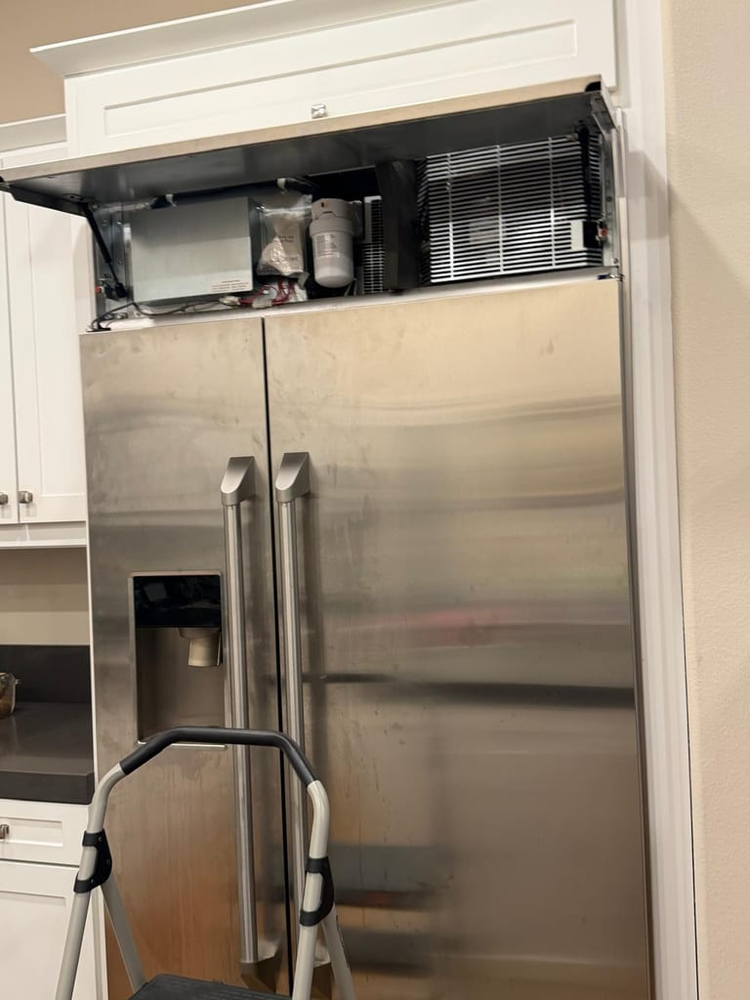
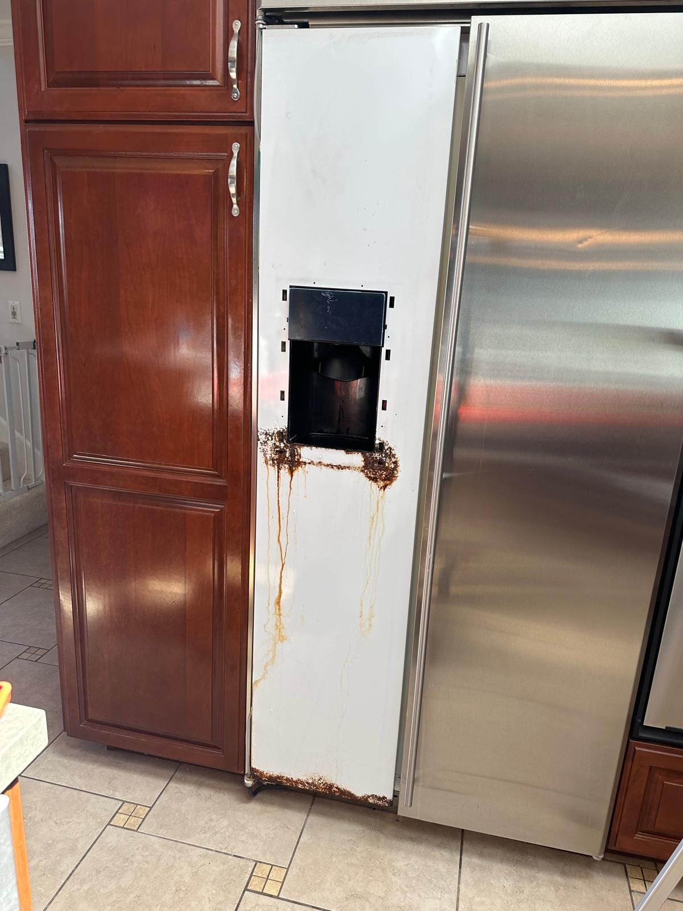
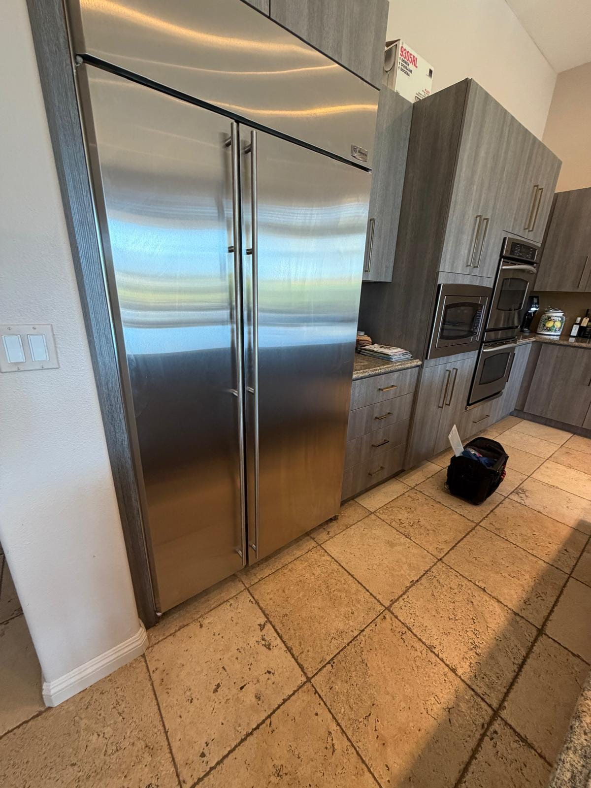
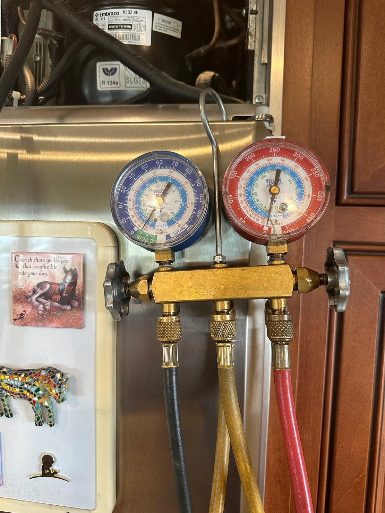

Five Similar-Looking Refrigerators, Five Different Repairs
From the kitchen, each job begins with a tall stainless built-in. Behind the panels, the work falls into three broad systems: the controls that coordinate operation, the fan and condenser that help release heat, and the compressor at the center of the refrigeration cycle. Knowing those layers makes a repair explanation easier to follow and helps you ask better questions before approving a part.
Anaheim: Control Board and Inverter Board Replacements
The Anaheim job paired a control-board replacement with an inverter-board replacement. The photo shows the upper service compartment open, where the electrical components and wiring are accessible above the refrigerator.
Those two names describe different components. GE's official parts diagram for a Monogram built-in lists a main control board and a compressor-mounted inverter separately. DOE's refrigerator technical material likewise separates electronic temperature control from the compressor system. The practical point is simple: when a repair estimate says "board," ask which board and what it controls.
Irvine: Main Control Board Replacement
The Irvine job focused on the main control board. Its photo again shows the upper compartment open, with the water filter, wiring, and condenser grille visible. Compared with Anaheim's two-board job, it is a useful reminder that one electronic repair does not automatically require every board in the compartment to be replaced.

Huntington Beach: Display Board Replacement
The Huntington Beach job moved to a different service area: the user-facing display. One photo shows the refrigerator front and another shows the display opening exposed during the display-board replacement. That physical separation helps explain why a display board is not simply another name for the main board in the upper machine compartment.

Mission Viejo: Condenser Motor Replacement
The Mission Viejo job involved the condenser motor. On a forced-air condenser design, the fan moves room air across the condenser so heat can leave the refrigeration system. Both GE's condenser guide and DOE's refrigerator technical material describe that airflow role. This is mechanical airflow work, distinct from the three electronic-board repairs above.

Laguna Beach: Compressor Replacement
The Laguna Beach job involved the sealed refrigeration system: a compressor replacement. DOE describes the compressor as the component that raises refrigerant pressure and supplies the energy that drives the refrigeration cycle. The service-gauge photo shows the sealed-system work area, which is a different category from replacing a display board or condenser fan motor.

How to Use This Before Your Own Service Visit
Start with the full model number and a plain description of what you observe. Note whether the change affects the display, one compartment, or the whole refrigerator; whether it is constant or intermittent; and when it began. Those details help frame the visit without treating a symptom as a diagnosis.
These photos document our Orange County repair work, but they are not a remote diagnostic tool. Similar outward behavior can lead to different repairs, so a technician still needs to inspect and test your refrigerator before naming a part.
If you need service rather than case-study detail, start with our GE appliance repair page for Orange County. Our broader Orange County refrigerator repair service covers other brands and refrigerator configurations.
Frequently Asked Questions About These Monogram Repairs
What repairs were documented on the five GE Monogram refrigerators?
The work included a control-board and inverter-board replacement in Anaheim, a main control board replacement in Irvine, a condenser motor replacement in Mission Viejo, a display board replacement in Huntington Beach, and a compressor replacement in Laguna Beach.
Are a Monogram main control board and compressor inverter the same part?
No. GE's parts catalog lists main control boards and compressor inverter control boards as distinct components. The Anaheim record names both replacements, while the Irvine record names only the main control board.
What does a refrigerator condenser motor do?
On a forced-air condenser design, the condenser fan moves room air across the condenser so the refrigeration system can reject heat. It handles airflow at the heat-rejection side of the system, while the compressor circulates and pressurizes refrigerant.
Does a display board replacement prove the main control board was bad too?
No. A display board and a main control board are separately named components in different service areas of the refrigerator. A technician tests the system before deciding which board is involved.
What information should I prepare before a Monogram refrigerator service visit?
Have the full model number ready and describe exactly what you can see, hear, or feel, including when the behavior started. GE's official parts diagrams are organized by model because component layouts and part numbers vary. Photos can help show the appliance and access area, but they do not replace testing.
Primary Sources
- GE Appliances Parts: Monogram Sealed System and Mother Board Assembly, accessed September 7, 2026.
- GE Appliances: Refrigerator Condenser Types, accessed September 7, 2026.
- U.S. Department of Energy: Refrigerators, Refrigerator-Freezers, and Freezers Technical Support Document, January 2022.